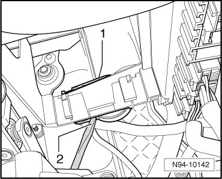
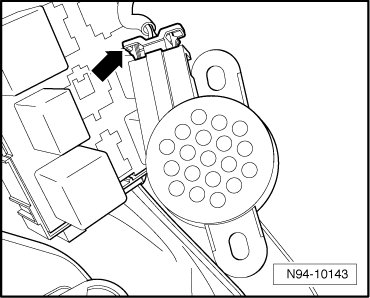

Parking Aid Speaker
Parking Aid System
Parking Aid Speaker
Parking Aid Loudspeaker (R169) is located on bracket for relay carrier and Vehicle Electrical System Control Module (J519) in front left foot well.
Removing
- Remove foot well cover, driver side.
- Remove relay carrier in front left foot well --> [ Relay Carrier in Left Front Footwell ] Relay Carrier in Left Front Footwell.
- Pry Parking Aid Loudspeaker (R169) - 1 - from bracket using a screwdriver - 2 -.

- Disconnect electrical connection - arrow -.

Installing
Install in reverse order of removal.